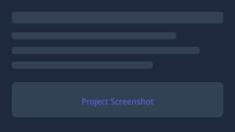

[Project Title]
This is a placeholder card. Replace this text with a real project description. See CONTENT_GUIDE.md for instructions on adding your own projects.
Software Engineer · Full-Stack & Cloud Specialist · 10+ Years Delivering Scalable Apps
Versatile, detail-driven software engineer with 10 years of experience in full-stack and cloud-native development for enterprise web platforms. Skilled in software design, Azure cloud architecture, data pipelines, and DevSecOps practices.
I thrive on agile teams, owning work end-to-end to deliver scalable, high-quality software that drives business impact. Outside of work I enjoy reading and book clubs, neighborly karaoke, outdoor time, and time with my family.
📍 MSFT Garage, Reston, VA
The event featured presentations from two AI adopters/evangelists at GitHub and Microsoft. The discussion covered GitHub Copilot, Copilot CLI, and agentic development generally. The discussion explored agents, cloud agents, calls against MCP servers, skills, instruction files, and more. We talked about context memory, session artifacts, knowledge indexes, and repeatable team level marketplaces. Highlighted tools included Work IQ, spec kit integration, Playwright, daily improve runs, and Rubber Duck.
First pushed this portfolio site to GitHub Pages. Built with semantic HTML, CSS custom properties, and vanilla JavaScript — no frameworks, no build step.
📍 AWS Skills Center, Pentagon City, VA
I learned about the Kiro product for 'spec-driven' agentic AI development. Kiro encourages development of code after defining specifications for the code. The tool manages scaffolding with input from developers before writing any code. Selection of models, reliance on tools is also managed by default by the tool. Configuration can be viewed and updated in tool-specific configuration files.
View event →📍 Pubkey Bar, Washington, DC
I got some perspective on how some people ran small-scale local models as an alternative to cloud service AI options alongside OpenClaw on their personal machines.
View event →📍 InfernoRed Office, One Loudoun, Ashburn, VA
This talk started with introduction to AI workflows but covered skills, other agentic development concepts. The presenter evangelized the Kendo UI tool. This was an event for a .NET developers group and discussion often had a .NET context.
View event →🌐 Online
This was an online forum of experts who talked in particular about setting enterprise policies for AI adoption. A key takeaway was that security policy in AI adoption needs to be a whole-of company effort.
View event →I gave a short presentation on one consideration of performance in modern reactive web apps. I presented on the browser rendering of reactive JavaScript frameworks, particularly Angular.
Download slides (PowerPoint) ↓
This is a placeholder card. Replace this text with a real project description. See CONTENT_GUIDE.md for instructions on adding your own projects.